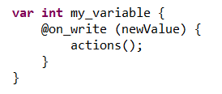
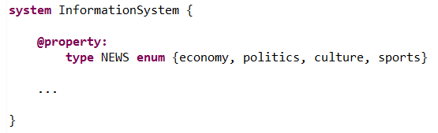
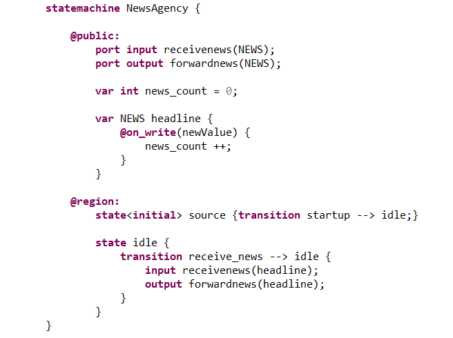
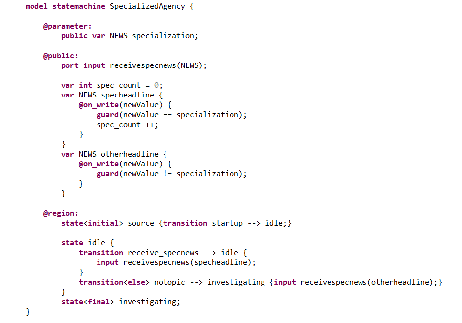
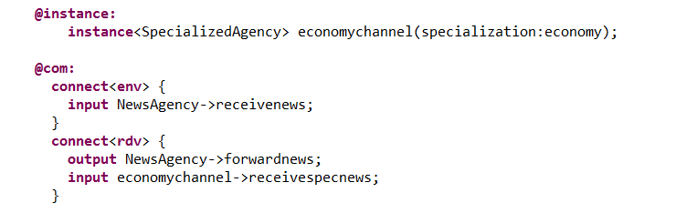
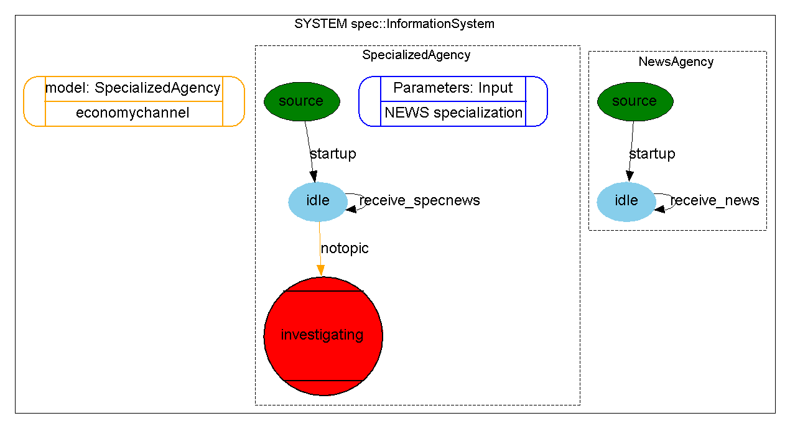
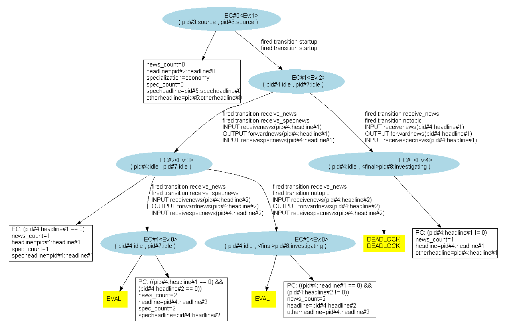

With XLIA, we can specify actions to be done when writing a new value on an existing variable. To do that, we use the "@on_write" behavior of the given variable. The syntax is the following :
The instructions within the "@on_write" will be executed each type a new value is assigned to the variable. We can use that for instance :
"@on_write" is given the new value as argument. The instructions then follow between brackets.
In the following example, we will consider a news agency that receives pieces of news. It forwards those news to specialized agencies. If a specialized agencies doesn't have a valid topic, it begins investigating. We'll use the "@on_write" to implement :
First, we'll define the different types of NEWS :
Then, we'll define the NewsAgency statemachine as follows (notice the use of "@on_write" to implement the counter) :
We'll use the model-instance paradigm to define the Specialized agencies; the different instances having different specializations (notice the use of "@on_write" as a filter) :
Finally, we'll create an instance of SpecializedAgency and connect all the machines :
The resulting system's graph is the following :
When executing an exploration, we get the following exploration graph :
